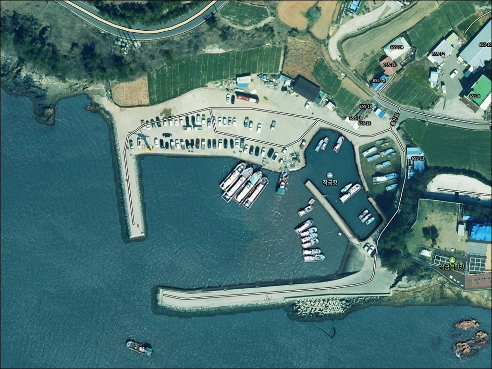
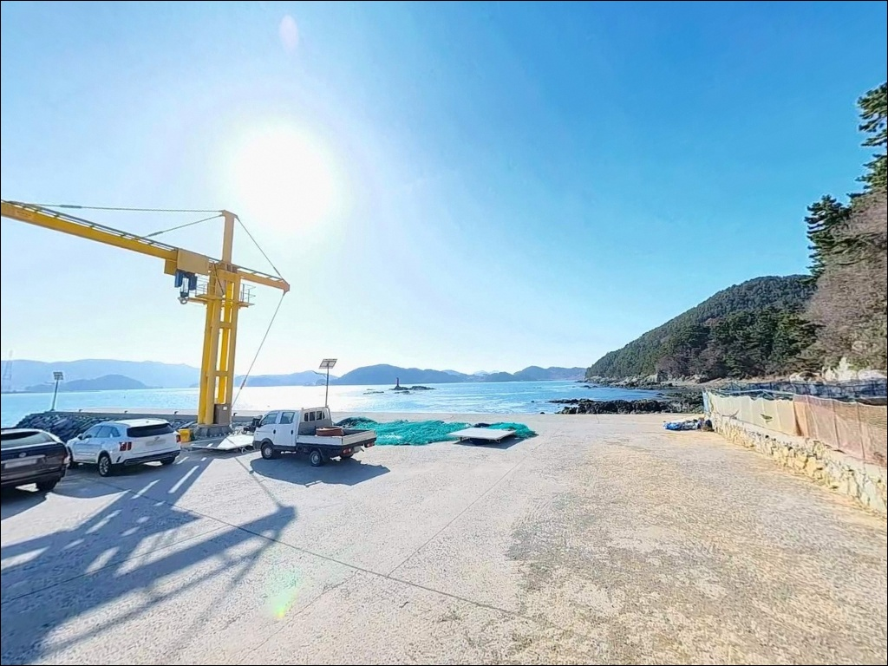
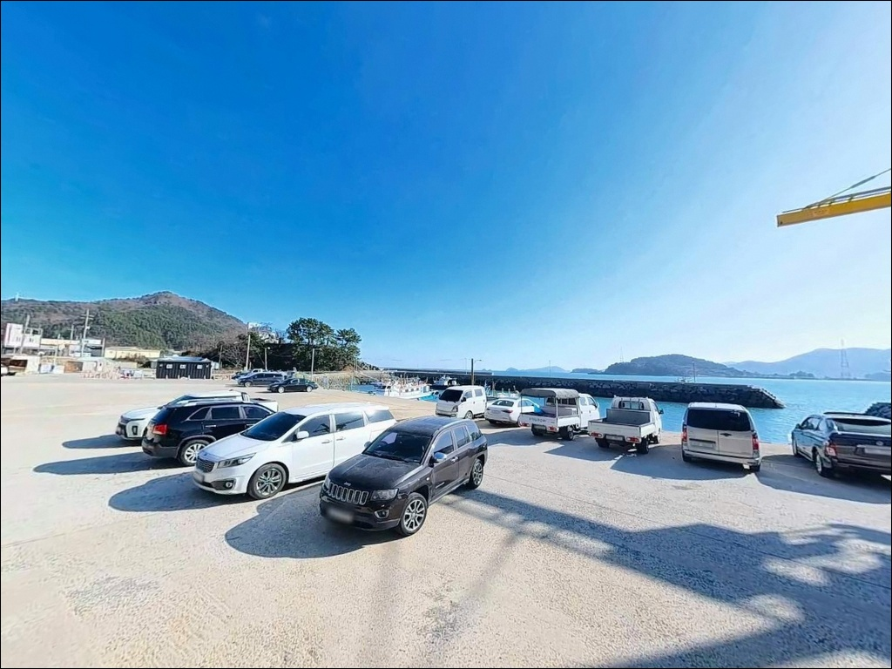
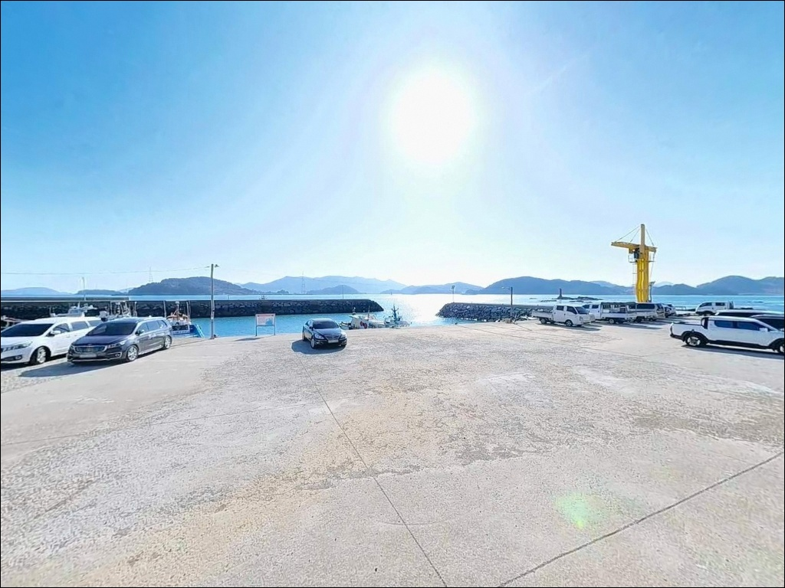
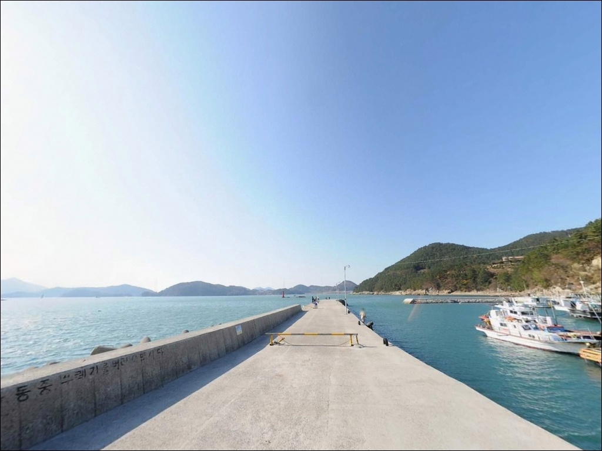
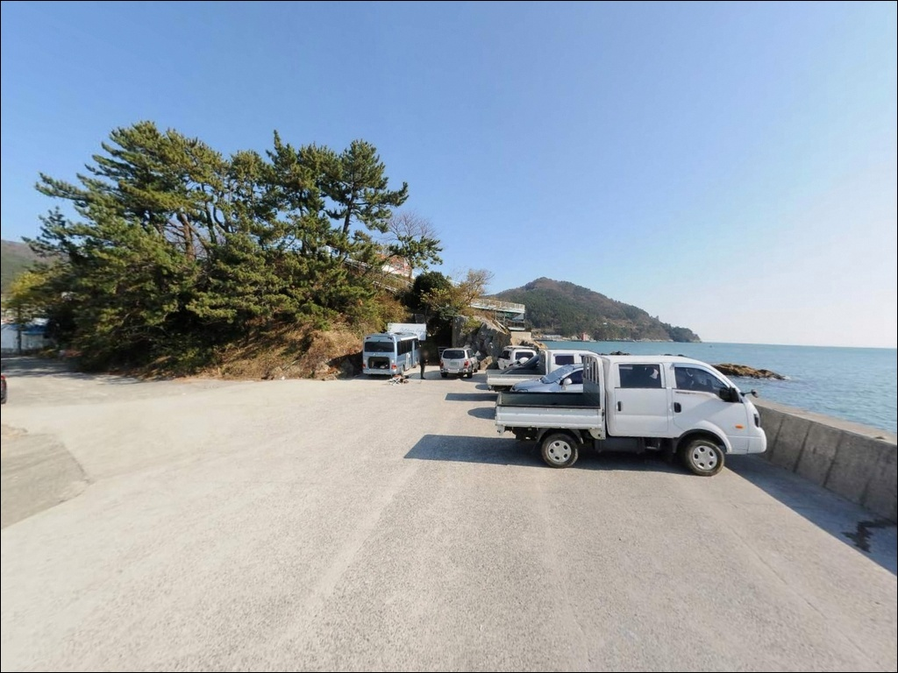
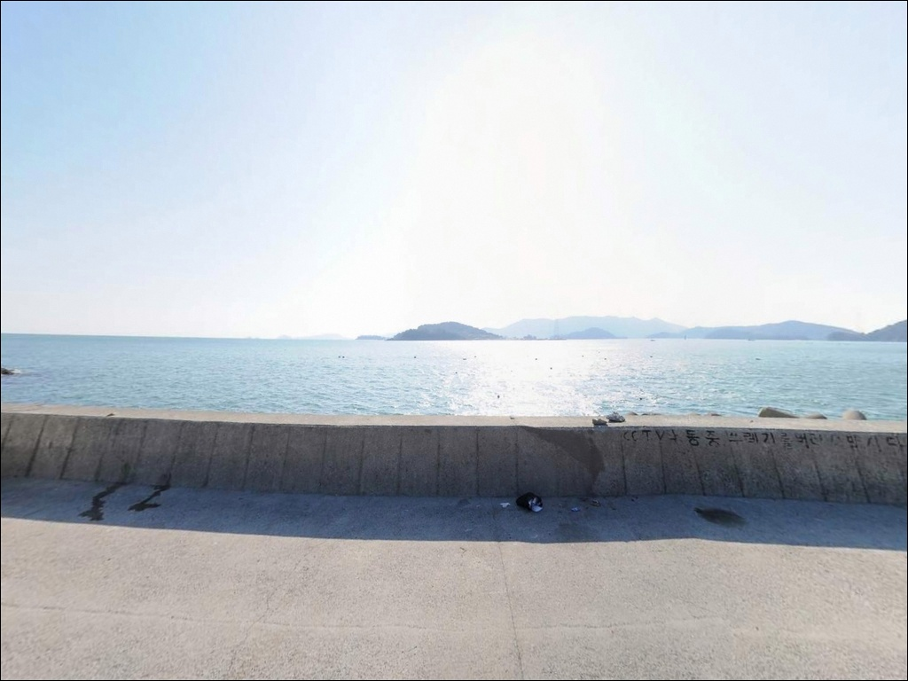
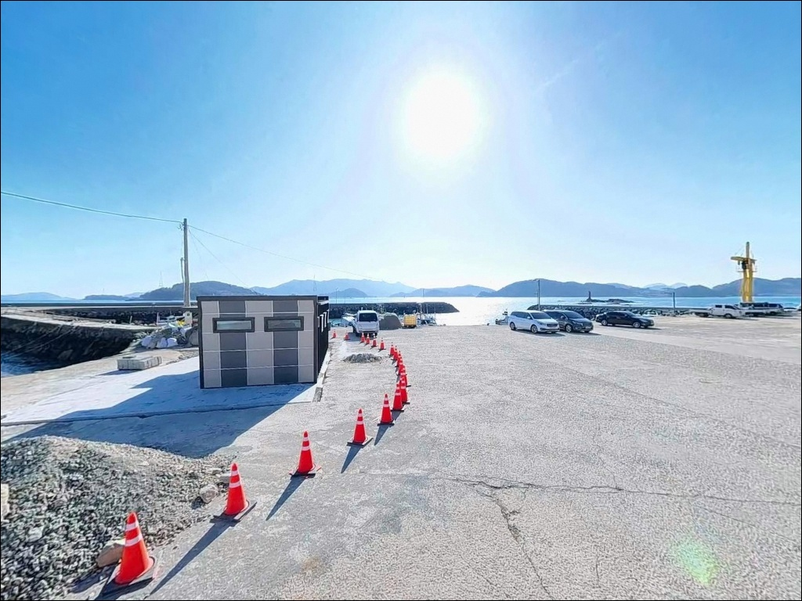
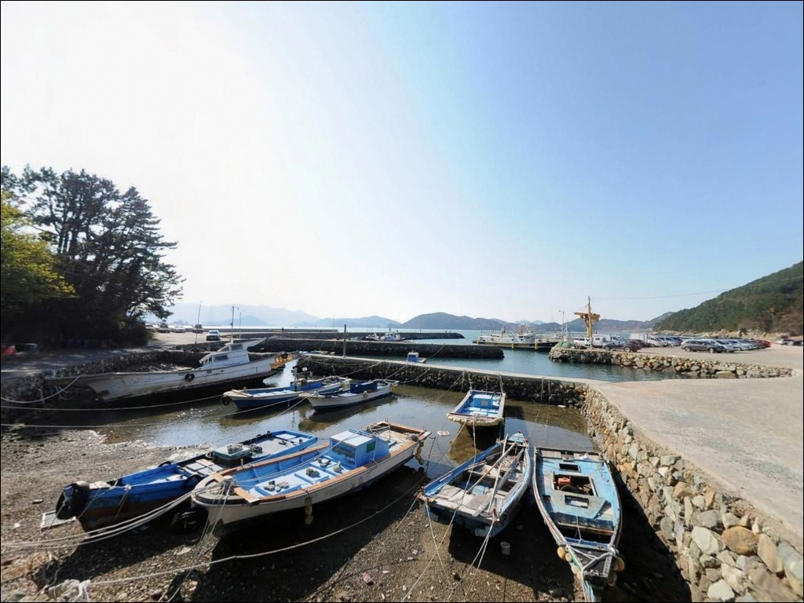

조류 빠른 외해권 작금항 방파제, 물때 확인하고 노리는 감성돔 릴찌낚시
이 페이지에는 광고(제휴 링크 포함)가 있으며, 광고 링크를 통해 구매하면 운영자가 판매 수익 또는 수수료를 받을 수 있습니다. 포인트 사진: 카카오맵 스카이뷰·로드뷰. 이 페이지의 지도·사진 이미지는 카카오맵의 실제 서비스 이미지와 다를 수 있습니다.


포인트 안내
작금항
전남 여수시 돌산읍 금성리 847-4
외항 방파제 끝단을 물때 확인 없이 찾아가면
조류가 세진 타이밍에 어떤 채비도
원하는 수심층을 유지하기 어려워집니다.
작금항은 돌산도 남쪽 난바다 방향으로 직접 열린
외해권 구조라, 조류 변화가 빠르고 폭이 넓은
포인트입니다.
전남 여수시 돌산읍 금성리에 위치한 작금항은
2007년 어촌정주어항으로 지정된
방파제 478m, 선착장 142m 규모의 공식 어항입니다.
외항 테트라포드 구간과 방파제 끝단이
감성돔·무늬오징어·갈치 계절 어종의
핵심 공략 구간으로 자리 잡고 있습니다.
이 글은 작금항의 진입 환경, 방파제 지형 구조,
낚시 방식별 적합 조건, 차박 여건에 집중합니다.
조황 단정이나 특정 어종 보장은
이 글의 범위에 포함되지 않습니다.

1. 진입 동선과 포인트 접근성
돌산도는 여수 돌산대교로 육지와 연결되어 있어
차량 진입 자체에 제약은 없습니다.
작금항까지는 돌산로를 따라 남단으로 내려가다가
금성리 방향으로 분기하는 구조이며,
전 구간 포장도로가 이어집니다.
항 인근 진입 구간은 1.5~2차로 수준으로
일부 구간에서 회차 공간이 제한됩니다.
대형 SUV나 카라반은 향일암 이정표 분기 이후
해안 도로 선형을 위성지도로 사전 확인해 두는 것이
실수를 줄이는 기본 조건입니다.
항 내부에는 방파제 기점부와 선착장 앞에
넓은 콘크리트 포장 부지가 확보되어 있습니다.
차량 수십 대가 동시 주차 가능한 규모이며,
대형 캠핑카도 회차하기 충분한 공간입니다.
다만 선착장 슬로프 및 어선 접안 구역은
주차 금지 구간으로 반드시 피해야 합니다.

2. 차박 환경과 야간 체류 여건
작금항 내항 선착장 앞 넓은 포장 공간은
차박에 활용하기 좋은 평탄한 구조입니다.
주차장 끝단 석축에 후면 주차하면
트렁크를 열고 바다를 바라보는
오션뷰 차박 배치가 자연스럽게 나옵니다.
항내 조업용 가로등이 일정 간격으로 갖춰져 있어
내항 쪽 야간 조도는 양호한 편입니다.
외항 방파제 쪽은 조명이 약해지므로
개인 헤드랜턴은 반드시 챙겨야 합니다.
성두마을 주거지가 인접해 있어
완전한 고립형 환경은 아니며,
야간 차박 프라이버시는 중간 수준입니다.
어촌정주어항 특성상 이른 새벽
어선 출항 시간대(새벽 4~6시)에는
선착장과 방파제 기점부가 어민 작업 공간으로
사용됩니다.
이 시간 이전에 차량 위치를 조정해
작업 공간을 비워두는 것이 기본 매너입니다.


3. 주변 편의시설 및 인프라 현황
작금항 입구 인근에 공중화장실이 있습니다.
항 주변으로 카페와 식당이 위치해 있어
식음료 해결이 가능한 편입니다.
낚시 미끼와 간단한 소품은
항 인근에서 수급이 가능합니다.
대형 마트나 주유소 이용은
돌산읍 군내리(약 10km)까지 이동해야 합니다.
군내리에 돌산수협, 농협, 하나로마트가 있어
실질적인 장거리 출조 물자 보급은
이 구역을 기점으로 삼는 것이 효율적입니다.
미끼·식재료·연료는 출발 전 충분히 준비하고
진입하는 편이 좋습니다.
응급 상황 발생 시 여수 시내까지 거리가
상당한 편이므로,
비상약품과 충분한 식수는
기본 자급 장비로 준비합니다.

4. 진입 전 반드시 챙겨야 할 준비사항
작금항 방문 전에 가장 먼저 확인할 것은
물때입니다.
돌산도 남단은 외해와 직접 접하는 구조로
조류 변화가 빠른 해역입니다.
바다타임에서 금성리 기준 물때를 확인하고
조금 전후 또는 정조 타이밍을 노리는 것이
채비 컨트롤을 안정시키는 기본 조건입니다.
돌산도 남단 외해 직면 구간은
너울성 파도가 내습하면
즉시 위험 구간으로 바뀝니다.
기상청 해상 예보와 파고·풍속을 출조 당일 아침
다시 한번 확인하는 것이 필수이며,
남풍이 강할 때는 외항 방파제 진입을
자제하는 것이 안전 기준입니다.
테트라포드 위 이동 시 젖은 표면에서
미끄러짐 사고가 빈발합니다.
구명조끼와 미끄럼 방지 밑창 신발은
방파제 외항 구간에서 필수입니다.
야간 이동 시 헤드랜턴과 예비 광원은
기본 장비로 챙겨야 합니다.

5. 지형 기반 낚시 여건 분석
작금항의 핵심 구조는
돌산도 남쪽 외해를 향해 뻗은
478m 길이의 방파제입니다.
외항 기준 수심은 7m 전후에서 시작해
방파제 끝단 바깥으로 갈수록 10m 이상 깊어지며,
방파제 끝단 조류 집중 구간이
핵심 포인트입니다.
외항 방파제에는 테트라포드가 배치되어 있으며,
테트라가 끝나는 지점에서 수심이 급변합니다.
이 경계 구간에서 구멍치기 채비 운용이 가능하고,
수중여가 발달한 바닥 구조가
어류의 은신처를 자연스럽게 형성합니다.
바닥 읽기와 채비 손실 방지가
이 포인트 공략의 기본 과제입니다.
내항은 완만한 수심이 형성되는 정온 수역으로,
원투낚시와 찌낚시에 적합한 조건입니다.
외항과 내항을 나눠 복수 방식으로
동시 운용하는 것이 이 포인트 구조에 맞습니다.
출조 전 작금항 조황, 성두방파제 조황,
돌산도 갈치 조황 키워드로
최신 현장 정보를 반드시 확인하시기 바랍니다.


6. 포인트에 어울리는 낚시 스타일
외항 방파제 끝단에서 가장 잘 맞는 방식은
감성돔 릴찌낚시입니다.
외항 조류를 타며 고부력 찌와 크릴 밑밥을
함께 흘려 수중여 주변 바닥층을 공략하는
전유동 채비가 이 포인트 수심과 조류 조건에
잘 맞는 채비 방식입니다.
가을부터 이듬해 봄까지 시즌 폭이 넓습니다.
에깅도 이 포인트 구조에 어울립니다.
외항 테트라포드 경계면과 방파제 끝단에서
2.5~3.5호 에기를 외해 방향으로 캐스팅하는 방식이
기본입니다.
돌산도 남단 조류가 강한 편이라
딥타입 에기를 사용하면
수심층 공략 효율이 올라갑니다.
야간에는 루어낚시와 원투낚시를 병행합니다.
방파제 직벽을 따라 1~3g 지그헤드에
소프트 루어를 운용하는 볼락 라이트게임이
야간 기본 방식이며,
5~8g 지그헤드에 야광 웜을 꿴 채비로
방파제 중층을 흘리는 갈치 루어,
내항 모래·자갈 바닥을 노리는 원투낚시로
붕장어와 노래미를 기대해볼 수 있습니다.

7. 대안 포인트와 플랜 B 동선
작금항 자리가 없거나 조류 여건이
여의치 않을 때 가장 먼저 이동할 곳은
성두방파제입니다.
금성리 내 동일 해안선상에 위치하며
차량으로 5분 내외 거리입니다.
방파제 수심 8m, 끝단 10m급으로
작금항과 유사한 어종 패턴을 가집니다.
가로등 시설이 우수하고 방파제 폭이 넓어
야간 이동 편의성도 뛰어납니다.
강풍이나 너울이 강한 날에는
돌산도 서쪽 가막만 방향
신기방파제(돌산읍 신기리)를 대안으로 봅니다.
내만형 포인트로 외해 직면 구간보다
파도 영향이 적어 기상이 나쁜 날
대피 포인트로 활용하기 좋습니다.
차박 기점이 마음에 들지 않으면
항 인근 카페 주차공간과 돌산 해안도로상
공터들이 대체 후보가 됩니다.
도로 접근성이 좋고 면적도
어느 정도 확보된 편입니다.

물때와 지형을 알면
작금항이 다르게 보입니다
찌낚시·에깅·루어낚시 복수 방식을
운용하는 낚시인에게
작금항의 방파제 구조는 잘 맞는 편입니다.
외항 테트라 경계와 끝단 콧부리 지형이
여러 어종의 이동 통로 역할을 하며,
수심 7~10m 구간은 시즌마다
다른 조합으로 공략해볼 수 있는 조건입니다.
반면 물때 확인 없이 사리 전후에 찾아가거나,
너울성 파도 예보를 무시하고
외항 끝단에 진입하면
낚시 자체가 불가능해지는 상황을
맞닥뜨릴 수 있습니다.
물때 확인, 기상 예보, 진입로 사전 점검,
이 세 가지를 갖추고 간다면
돌산도 남단 낚시 동선에서
중요한 포인트가 될 수 있는 곳입니다.
내항 선착장 앞 넓은 주차 공간에
차를 세우고 외항 방파제를 바라보며
하룻밤 머무는 차박 여행자라면,
어민 새벽 출항 시간대만 배려한다면
낚시와 차박을 동시에 즐기기 좋은
돌산도 남단 출조지입니다.